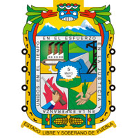

Puebla de Zaragoza, situada a la porción central y media del valle poblano sobre 2200 metros de altitud, es el centro de una de las regiones de clima cálido, templado, con asentamientos humanos muy antiguos en los que hoy es el territorio mexicano. El área donde se encuentra la ciudad posee diferentes eminencias topográficas que la limitan en tres de cuatro extremos. Al norte se localiza el acueyametepec, hoy conocido como Loreto y Guadalupe; al este el cerro de Amalucan conocido como el tepoxuchil que marca el extremo oeste de Tepeaca, seguido de los cerros de la calera, las navajas y finalmente el chiquihuite. Al oeste el cerro centepec hoy San Juan, al extremo sur, en suave pendiente. Se abre el valle de Atlixco y Valsequillo. El valle de Tehuacán, que se caracteriza por ser una región seca y con pocos recursos para la supervivencia humana, fue en los más antiguos tiempos de la ocupación humana en Puebla uno de los sitios más importantes. Durante la etapa lítica, que comienza con la llegada del hombre a México (alrededor del año 30 000 a. C.) y concluye hacia el 7000 a. C., con los primeros indicios de agricultura, el valle de Tehuacán fue el escenario del desarrollo de un grupo humano que con el tiempo habría de convertirse en uno de los primeros cultivadores del maíz en Mesoamérica. Los indicios más antiguos de la presencia humana en Puebla provienen de El Riego, fechados con carbono 14 en el año 20 000 a. C. Los ocupantes de El Riego empleaban una tecnología lítica muy simple, en la que la falta de puntas de proyectil es característica. Las herramientas estaban orientadas a la actividad recolectora y el procesamiento de vegetales, así como el aprovechamiento de pequeñas especies animales. Figurilla olmeca de Las Bocas Durante los siguientes horizontes de la etapa lítica, en el cenolítico y el protoneolítico, tuvo lugar en la región de Tehuacan el desarrollo de la agricultura del maíz. Recientes investigaciones han puesto en duda que la domesticación de este cereal haya tenido lugar en México, y apuntan a que se trata de un cultivo de los Andes peruanos. Si esto es cierto, se puede decir que los ocupantes del valle de Tehuacán tuvieron muy tempranos contactos con Sudamérica. De lo contrario, la región seguiría siendo el sitio donde se han encontrado los restos más antiguos de la agricultura del maíz, fechados entre el año 6500 a. C. y 2500 a. C. Los vestigios hallados son pequeños jilotes (canutos de maíz) fosilizados encontrados en varias cuevas de las sierras que rodean Tehuacán, así como herramientas de piedra asociadas a su procesamiento, como el metate. Los sitios en donde se han encontrado estas evidencias conforman lo que se denomina "Complejo Coxcatlán", que es el nombre de su sitio más representativo. Durante el período Preclásico Temprano, el valle de Tehuacán también fue uno de los escenarios donde primero se desarrolló la cerámica mesoamericana. La cerámica es tomada por los arqueólogos que estudian Mesoamérica como un rasgo definitorio de la vida sedentaria. Quizá el más antiguo de todos los asentamientos humanos en México es Ajalpan, también en el valle de Tehuacán, donde se ha encontrado una estructura circular de piedra, fechada en el año 3000 a. C. En este sitio también se descubrieron restos de tecomates (recipientes de barro con forma casi esférica) que han sido fechados en el año 2300 a. C., unos ciento cincuenta años más tarde que la primera cerámica de Puerto Marqués, en la costa de Guerrero. Hacia el final de esta primera parte del Preclásico, Tehuacán pasaría a convertirse en una región periférica del área Centro de México. En lo que hoy es el territorio poblano, el valle de Puebla-Tlaxcala se convirtió entonces en una región de suma importancia, siempre ligada con las grandes ciudades del valle de México. Flora: maguey, árboles frutales (ciruelo, chabacano, chirimoya, durazno, guayaba, higo, lima, limón, manzana, naranjo, nogal, pera, perón tejocote), uva y xoconostle. Fauna doméstica: Ganado vacuno, ovino, caprino, porcino, asnal, caballar, aves de corral, perros y gatos. Fauna silvestre: ardillas, armadillos, cacomiztle, conejo, coyote, liebre, murciélago, onza, rata casera y de campo, ratón, tejón, tlacuache, tuza, zorra, zorrillo, lechuza, lagartija, víbora de cascabel, cenzontle y zopilote. La gastronomía poblana, producto del mestizaje que devino con la Conquista de México por parte de los españoles, es una de las más representativas de la República Mexicana. Numerosos mitos están asociados a algunos de los platillos más conocidos de la gastronomía regional del estado, a la que se suele identificar en México en relación con dos platillos que se consideran platillos nacionales: el mole poblano, los chiles en nogada y el mole de caderas. Sobre el mole, la leyenda dice que fue creación de sor Andrea de la Asunción, del convento de Santa Rosa en la ciudad de Puebla. Esta monja habría creado el platillo en ocasión de la visita del obispo a su congregación. En la leyenda, el nombre del plato se asocia con una expresión de admiración de una compañera de Andrea de la Asunción al ver a ésta moliendo los ingredientes afanosamente, aunque se sabe que la palabra mole es de origen náhuatl y que la mezcla de chiles secos o frescos en la confección de salsas era una práctica común en las gastronomías mesoamericanas precolombinas. A esta base de chiles, uno de los ingredientes básicos de la gastronomía mesoamericana, se sumaron especias y los aceites llegados con los españoles, que dieron origen a los moles contemporáneos, cuya preparación de ninguna manera es exclusiva de Puebla, aunque el mole más conocido sea precisamente el poblano.
